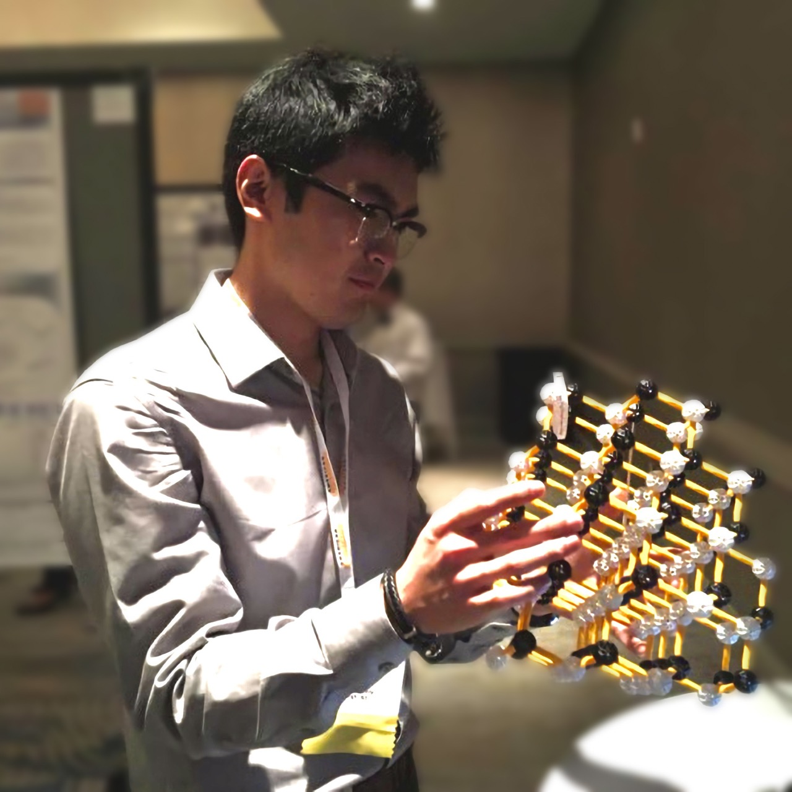

🌟 Grants: (1) Dr. Hou was awarded the ACS PRF grant. (2) Our lab was selected for the CU-SRNL GSS Support.
📝 News: Dr. Hou was appointed as a CUSHR Faculty Scholar by Clemson University's Office of the Provost.
🔊 Announcement: Clemson undergrads, check our two Creative Inquiry (CI) projects #2773 and #2764.
About Me
🎓 I received my Ph.D. from North Carolina State University and my bachelor's degree from Central South University in China. The majority of my postdoctoral training was at Virginia Tech. More about me
🔬 My research interests include energy science, energy materials, electrochemistry, crystallography, advanced characterization, ceramic processing/manufacturing, and AI for materials research.
📘 I love teaching. Courses and Outreach
Research Lab
At the Hou Lab, we seek to understand and control material properties for electrochemical energy applications while advancing fundamental knowledge in materials electrochemistry and solid-state physics. Our research spans the design, synthesis, processing, characterization, and application of functional materials for batteries, catalysis, ferroelectrics, capacitors, fuel cells, and related energy systems. By integrating synthesis, electrochemistry, crystallography, spectroscopy, multiscale characterization, and data-enabled analysis, we aim to develop structure-informed insights that guide next-generation materials design.
• Our lab members
• Research projects
• Publication list
Recent News
| Time | Event (Full News) |
|---|---|
| 2026.07 | This summer, we were pleased to host three interns: Tuhina Sambhus, Caroline Pringle, and Porter Mullens. It was wonderful to see their research progress and contributions in such a short time. Wishing them continued success! |
| 2026.06 | Dr. Hou served as a proposal reviewer for NSF. |
| 2026.05 | Dr. Hou was awarded by the ACS Petroleum Research Fund (PRF) after national competition. Through the Doctoral New Investigator (DNI) program, we will conduct fundamental research in the petroleum field. |
| 2026.05 | Dr. Hou was selected by the Clemson Office of Research Development (ORD) to attend the Grant Writers' Seminars & Workshops (GWSW). |
| 2026.04 | Dr. Hou was appointed as a Clemson University School of Health Research (CUSHR) Faculty Scholar. In this role, the lab aims to advance Clemson's health-related research and to strengthen collaborations with faculty and healthcare system partners. |
| 2026.04 | Dr. Hou served as the conference organizer and division representative for the first-ever ACerS Spring Meeting. Photo with Chair Dr. Bordia. |
| 2026.04 | Bryson was selected for graduate travel support to attend the ACerS Spring Meeting in Bellevue, WA. |
| 2026.04 | Our lab was selected for the CEES Sponsored Summer Internship Program, a collaborative outreach initiative with South Carolina State University (SCSU). |
| 2026.04 | Our two Creative Inquiry (CI) projects went online. See ID #2773 on X-ray imaging and #2764 on battery cathodes. Clemson undergraduate students are encouraged to join our team. |
| 2026.04 | Tariq and Nishanth won the first and second prizes respectively in one session at 19th Annual MRS/Optica Poster Competition. |
| 2026.04 | Our collaborative proposal was selected for funding by the CU-SRNL GSS Initiative. The project focused on energy security in collaboration with Savannah River National Laboratory (SRNL). |
| 2026.04 | Dr. Hou served as a proposal reviewer for DOE. |
| 2026.03 | Bryson represented our lab at the ACS Spring Conference in Atlanta, GA, and delivered an oral presentation on "Advances in Imaging Probes and Techniques." |
| 2026.02 | Dr. Hou served as a proposal reviewer for US Army. |
| 2026.01 | The newly installed 3D X-ray imaging (XRM) became available in our state-of-the-art AMIC building (also this video). |
| earlier | More archived news |
{kind=link}
{kind=link}
{kind=link}
Updated: 2026-06-15